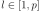
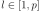
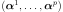
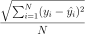

GeneralLinearModelResult¶
- class GeneralLinearModelResult(*args)¶
General linear model result.
- Parameters
- inputSample, outputSample
Sample The samples
 and
and  .
.- metaModel
Function The meta model:
 , defined in :eq:metaModel.
, defined in :eq:metaModel.- residuals
Point The residual errors.
- relativeErrors
Point The relative errors.
- basiscollection of
Basis Collection of the
 functional basis: for each .
Its size should be equal to zero if the trend is not estimated.
functional basis: for each .
Its size should be equal to zero if the trend is not estimated.- trendCoefficientscollection of
Point The trend coefficients vectors .
- covarianceModel
CovarianceModel Covariance function of the Gaussian process with its optimized parameters.
- optimalLogLikelihoodfloat
The maximum log-likelihood corresponding to the model.
- inputSample, outputSample
Notes
The structure is usually created by the method run() of a
GeneralLinearModelAlgorithm, and obtained thanks to the getResult() method.The meta model
is defined by:(1)¶
where and
 are the trend functions.
are the trend functions.If a normalizing transformation T has been used, the meta model is built on the inputs and the meta model writes:
(2)¶
Examples
Create the model
 and the samples:
and the samples:>>> import openturns as ot >>> f = ot.SymbolicFunction(['x'], ['x * sin(x)']) >>> sampleX = [[1.0], [2.0], [3.0], [4.0], [5.0], [6.0]] >>> sampleY = f(sampleX)
Create the algorithm:
>>> basis = ot.Basis([ot.SymbolicFunction(['x'], ['x']), ot.SymbolicFunction(['x'], ['x^2'])]) >>> covarianceModel = ot.GeneralizedExponential([2.0], 2.0) >>> algo = ot.GeneralLinearModelAlgorithm(sampleX, sampleY, covarianceModel, basis) >>> algo.run()
Get the result:
>>> result = algo.getResult()
Get the meta model:
>>> metaModel = result.getMetaModel() >>> graph = metaModel.draw(0.0, 7.0) >>> cloud = ot.Cloud(sampleX, sampleY) >>> cloud.setPointStyle('fcircle') >>> graph = ot.Graph() >>> graph.add(cloud) >>> graph.add(f.draw(0.0, 7.0)) >>> graph.setColors(['black', 'blue', 'red'])
Methods
Accessor to the collection of basis.
Accessor to the object's name.
Accessor to the covariance model.
getId()Accessor to the object's id.
Accessor to the metamodel.
getModel()Accessor to the model.
getName()Accessor to the object's name.
getNoise()Accessor to the Gaussian process.
Accessor to the optimal log-likelihood of the model.
Accessor to the relative errors.
Accessor to the residuals.
Accessor to the object's shadowed id.
Accessor to the trend coefficients.
Accessor to the object's visibility state.
hasName()Test if the object is named.
Test if the object has a distinguishable name.
setMetaModel(metaModel)Accessor to the metamodel.
setModel(model)Accessor to the model.
setName(name)Accessor to the object's name.
setRelativeErrors(relativeErrors)Accessor to the relative errors.
setResiduals(residuals)Accessor to the residuals.
setShadowedId(id)Accessor to the object's shadowed id.
setVisibility(visible)Accessor to the object's visibility state.
- __init__(*args)¶
- getBasisCollection()¶
Accessor to the collection of basis.
- Returns
- basisCollectioncollection of
Basis Collection of the
function basis: for each .
- basisCollectioncollection of
Notes
If the trend is not estimated, the collection is empty.
- getClassName()¶
Accessor to the object’s name.
- Returns
- class_namestr
The object class name (object.__class__.__name__).
- getCovarianceModel()¶
Accessor to the covariance model.
- Returns
- covModel
CovarianceModel The covariance model of the Gaussian process W.
- covModel
- getId()¶
Accessor to the object’s id.
- Returns
- idint
Internal unique identifier.
- getName()¶
Accessor to the object’s name.
- Returns
- namestr
The name of the object.
- getNoise()¶
Accessor to the Gaussian process.
- Returns
- process
Process Returns the Gaussian process
 with the optimized parameters.
with the optimized parameters.
- process
- getOptimalLogLikelihood()¶
Accessor to the optimal log-likelihood of the model.
- Returns
- optimalLogLikelihoodfloat
The value of the log-likelihood corresponding to the model.
- getRelativeErrors()¶
Accessor to the relative errors.
- Returns
- relativeErrors
Point The relative errors defined as follows for each output of the model:
 with
with  the vector of the
the vector of the  model’s values
model’s values
 and
and  the metamodel’s values.
the metamodel’s values.
- relativeErrors
- getResiduals()¶
Accessor to the residuals.
- Returns
- residuals
Point The residual values defined as follows for each output of the model:  with
the model’s values and the
metamodel’s values.
- residuals
- getShadowedId()¶
Accessor to the object’s shadowed id.
- Returns
- idint
Internal unique identifier.
- getTrendCoefficients()¶
Accessor to the trend coefficients.
- Returns
- trendCoefcollection of
Point The trend coefficients vectors
- trendCoefcollection of
- getVisibility()¶
Accessor to the object’s visibility state.
- Returns
- visiblebool
Visibility flag.
- hasName()¶
Test if the object is named.
- Returns
- hasNamebool
True if the name is not empty.
- hasVisibleName()¶
Test if the object has a distinguishable name.
- Returns
- hasVisibleNamebool
True if the name is not empty and not the default one.
- setModel(model)¶
Accessor to the model.
- Parameters
- model
Function Physical model approximated by a metamodel.
- model
- setName(name)¶
Accessor to the object’s name.
- Parameters
- namestr
The name of the object.
- setRelativeErrors(relativeErrors)¶
Accessor to the relative errors.
- Parameters
- relativeErrorssequence of float
The relative errors defined as follows for each output of the model:
with the vector of the model’s values
and the metamodel’s values.
- setResiduals(residuals)¶
Accessor to the residuals.
- Parameters
- residualssequence of float
The residual values defined as follows for each output of the model: with
the model’s values and the
metamodel’s values.
- setShadowedId(id)¶
Accessor to the object’s shadowed id.
- Parameters
- idint
Internal unique identifier.
- setVisibility(visible)¶
Accessor to the object’s visibility state.
- Parameters
- visiblebool
Visibility flag.